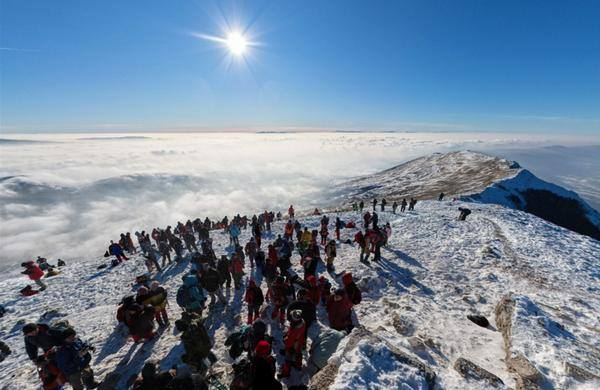

Vidovdanski noćni uspon na Rtanj koji se svke godine održava krajem juna. Tradicionalni noćni uspon na vrh Rtnja pred izlazak sunca. Manifestacija okuplja planinare i turiste iz čitave Srbije. Sa vrha Rtnja se prostire pogled čak do Beogrda. Ova manifestacija je u organizaciji TO Boljevac.
Tradicionalno svake godine 7. juna se proslavlja dan Svetog Jovana (biljobera), kada veliki broj zaljubljenika u očuvanu prirodu Rtanja iz Sokobanje organizovano kreće na Rtanj preko sela Vrmdže, poznatog po izuzetno ljubaznim domaćinima.
Božićni uspon na Rtanj je takođe tradicionalna manifestacija koja će se 2014. godine održati po trideseti put. Planinsko društvo Naftaš organizuje Republičku dvodnevnu planinsku akciju, s tim da tura podrazumeva i jednu noć u selu Rtanj kako bi učesnici manifstacije sutradan krenuli odmorni na uspon.
Od ostalih manifestacija izdvajaju se: Jesenja likovna kolonija “Milenijum”, Bambi uspon na Rtanj, Festival “duh Rtnja”, Hajka na vuka, Proslava 1. maja, Hajdučki sastanak, Bekrijske zabave (postoje muška i ženska, muška je prvog ponedeljka u postu a ženska zadnjeg ponedeljka u postu), Crnorečki kotlić (takmičenje u pripremanju riblje čorbe), Paljenje badnjaka, Romski bal i Hajdučki rastanak.
